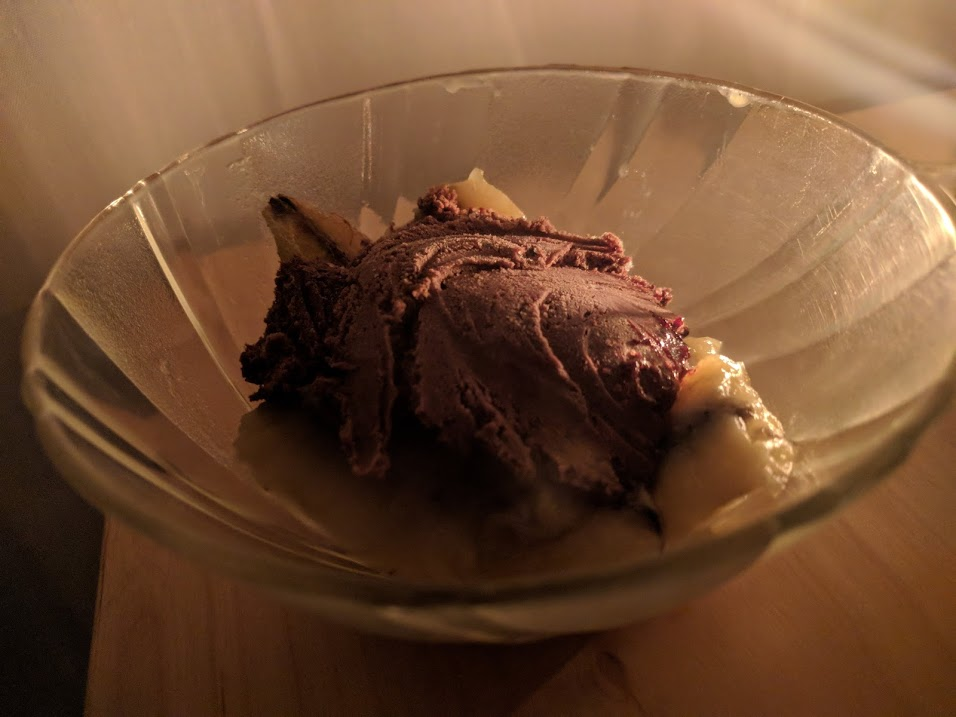

Glace au chocolat indécente

Ici avec des bananes flambées
Pour 1 litre de glace environ :
- 40cL de crème liquide entière
- 200g de chocolat noir
- 5 jaunes d'œuf
- 150g de sucre
- Faire chauffer deux tiers du chocolat avec deux tiers de la crème, à feu moyen-doux, pour que ça fonde bien.
- Pendant ce temps, fouetter les jaunes d'œufs et le sucre jusqu'à ce que ça devienne jaune pâle.
- Lorsque c'est bien fondu, verser le mélange chocolat/crème sur les œufs et le sucre. Mélanger bien, et remettre à chauffer à feu moyen quelques minutes. Il ne faut pas que ça bouille.
- Ajouter le reste de crème fraîche, laisser refroidir.
- Râper le reste de chocolat avec un épluche-légume pour faire des copeaux stylés.
- Ajouter les copeaux dans le tout, et passer à la sorbetière une petite demi-heure. Laisser quelques heures dans le congélateur pour que ça prenne.
Retour à la liste des recettes